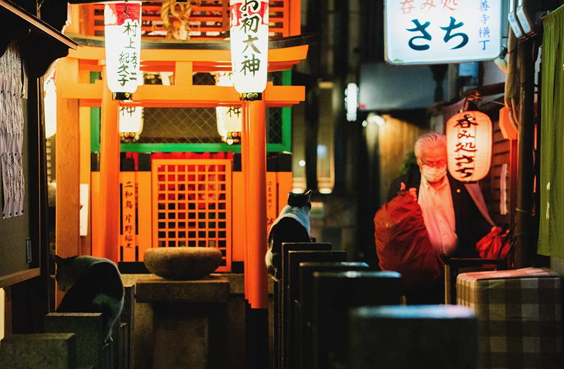

Mike se dirige hacia el edificio de apartamentos, buscando algún refugio para pasar la noche.
Mientras se va acercando más y más al edificio, Mike ve varias cosas que le llaman la atención, pero se fija en dos en específico.
Por una parte, Mike ve a un hombre solitario que va caminando hacia su apartamento. El hombre no se ve muy amiglable, pues está cansado por el día que ha tenido.
Por otra parte, Mike ve a una familia de gatos callejeros que viven en el callejón en la parte trasera del edificio. La familia se ve unida y feliz, aunque no tengan un lugar seguro para dormir por las noches.
Es momento de decidir con quién Mike irá para pasar la noche.